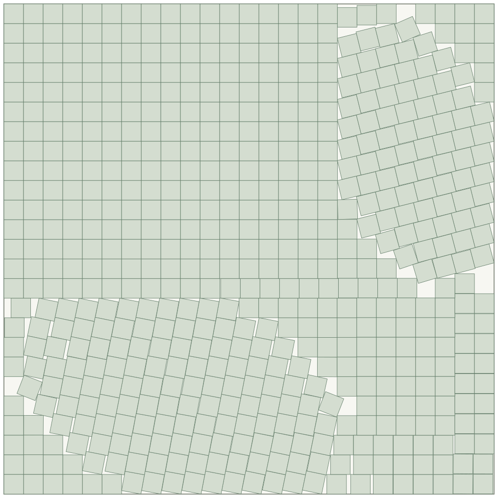

Packing problems
602 unit squares in a square
Unit squares; smaller container side is better.


This arrangement
24.990356
Container side · 8 significant figures
0.0129% smaller container side than the value listed in Francisco Couzo’s catalogue on 19 October 2026.
| Arrangement | Container side |
|---|---|
| This arrangement | 24.990356 |
| Francisco Couzo’s catalogue | 24.993581 |
Difference: 0.0032251442 smaller side.
Compared with the exact certificate linked below.
Built using Francisco Couzo’s square-packing solver.